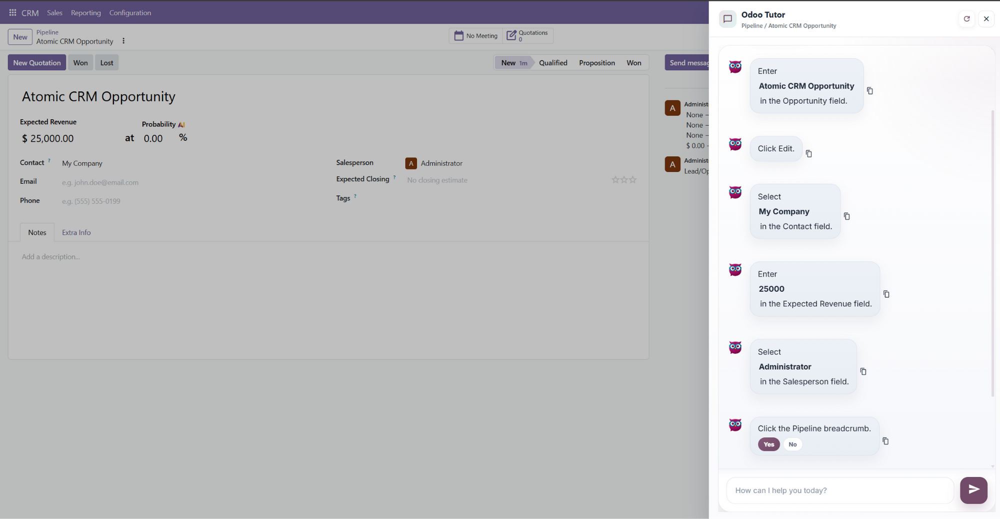
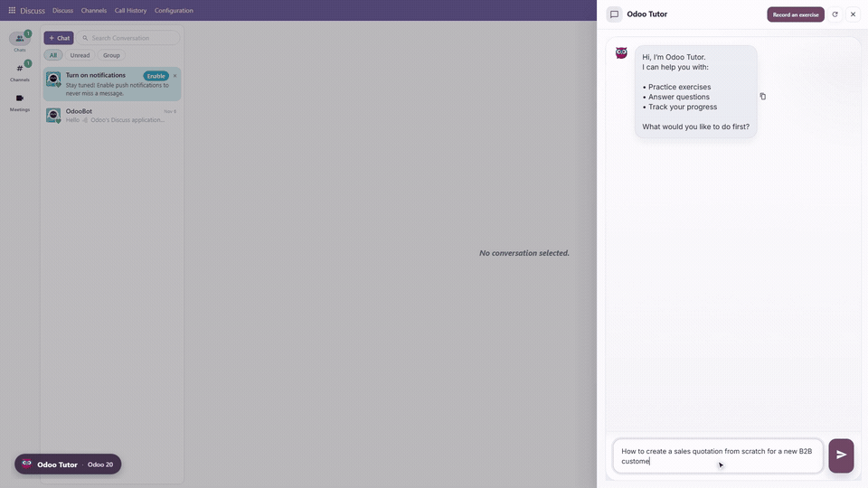

Odoo Tutor · Odoo 20
Odoo Tutor is an in-app AI learning companion that guides your team step by step inside Odoo 20 — answering contextual questions, spotlighting the exact fields and buttons to click, tracking real hands-on exercises, and providing real time feedback and correction.

Open the tutoring sidebar without leaving Odoo. Ask about your current screen and get clear answers tailored to your workflow.
Follow step-by-step instructions with contextual hints and highlights pointing directly to the next field or button.
Each real action in Odoo advances the exercise automatically until completion — ideal for onboarding teams and consultants.
Ready-to-Try Exercises
Send any of these prompts to Odoo Tutor to start the guided exercise.

proxy_mode, or an ngrok tunnel for local dev).web.base.url to your HTTPS URL and configure the wss:// service URL in Odoo Tutor settings.Questions about compatibility, exercises, or setup?
Contact juanzamdev@gmail.com · Live Demo · YouTube Demo